Passo a passo completo, do pedido até o motorista. Aqui está escrito tudo, inclusive o óbvio — se ficou na dúvida, a resposta está nesta folha.
Emite as notas fiscais sozinho, o dia todo — inclusive enquanto a equipe trabalha.
Imprime as folhas e resolve os pedidos pendentes.
Separam, bipam, conferem e embalam.
Leva os sacos fechados pro despacho.
Logo após o pedido ser feito pelo cliente
Quem faz: Líder
Passo 1 — Diagnóstico: jogar o número do pedido no Mercado Livre
❌ Se estiver CANCELADO
🚚 Se for ENVIO HOJE → forçar na Plugg.to
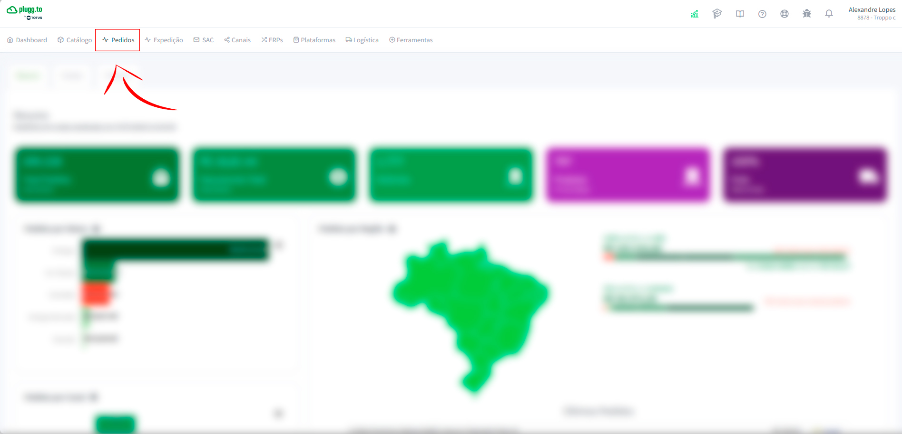
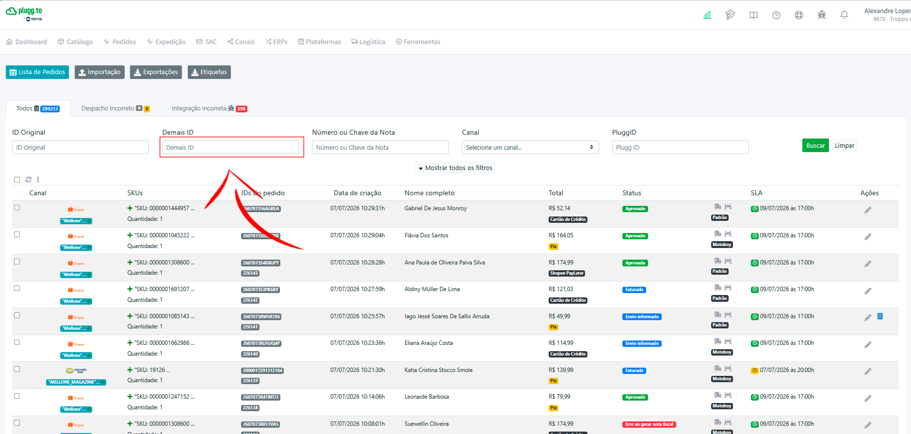
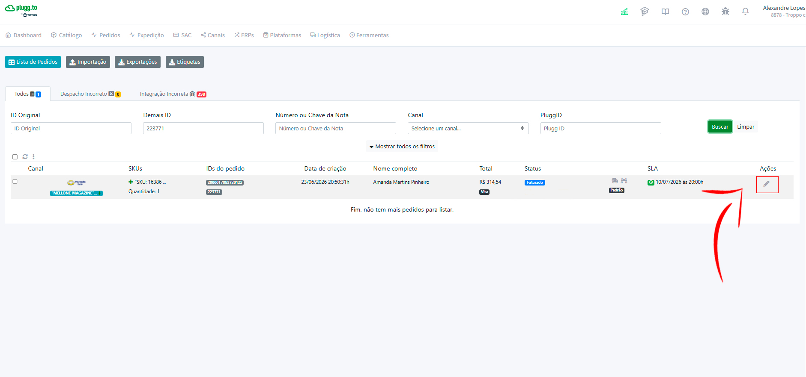
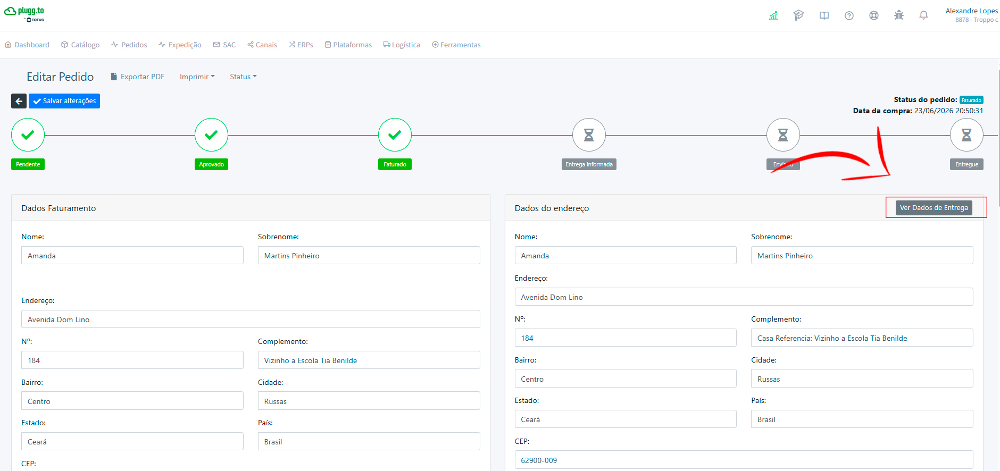
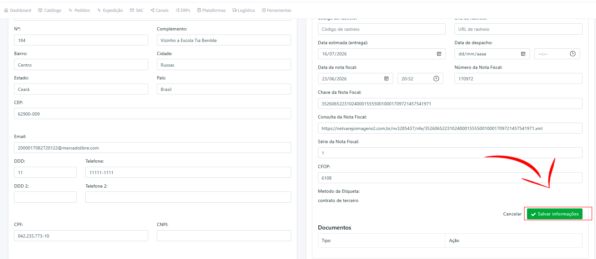
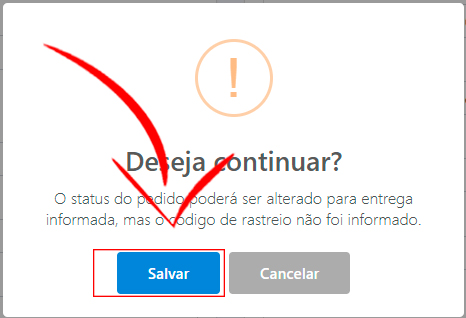
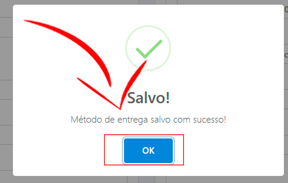
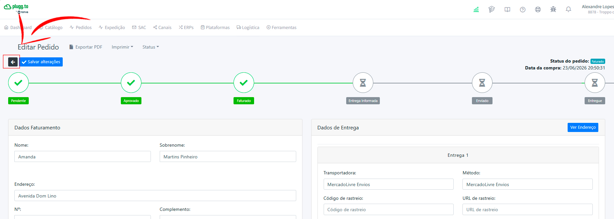
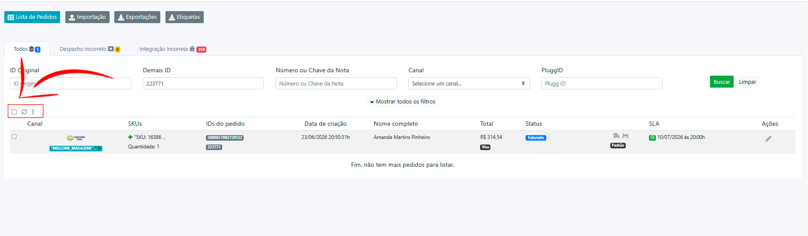
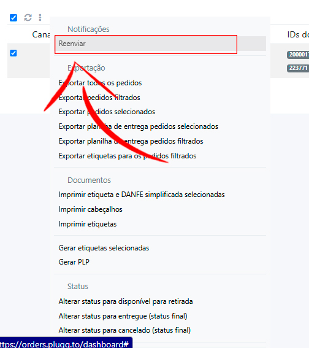
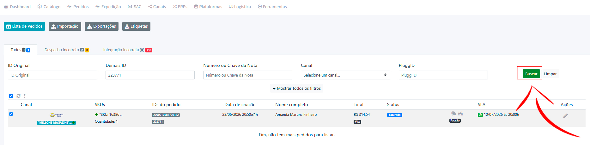
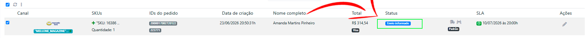
📅 Se for ENVIO OUTRO DIA → picking adiantado + pasta
Quem faz: Equipe
O sistema garante que a caixa é a do pedido. Esses pontos, só o olho humano pega. É aqui que a gente evita devolução, reclamação e nota baixa no marketplace.
Sempre. Toda caixa, todo pedido. Não existe "essa não precisa".
Verificar se a etiqueta colada na caixa é o mesmo produto/referência que está dentro da caixa.
Tirar os dois pés. Um esquerdo + um direito, mesmo modelo, mesma cor, mesmo tamanho nos dois.
O número no solado/palmilha bate com o da etiqueta da caixa e com o do pedido na tela.
Olhar cola escapando, costura solta, mancha, deformação, e o estado da própria caixa.
Sempre passar a seda em torno do calçado e colocar o cartão de obrigado com a frente para cima, para que, quando o cliente abrir a caixa, ele veja o cartão.
Achou avaria ou par errado? Não embala. Separa o produto, chama o Líder pra trocar o item, e a peça com defeito vai pro lugar de avariados — nunca de volta pra prateleira como se nada tivesse acontecido.
Quem faz: Equipe e Líder
Vale pra todo mundo
| Situação | O que fazer |
|---|---|
| Sistema / NetVarejo fora do ar | Parar a bipagem e avisar o Responsável. Não embalar nada sem a validação do sistema. Esperar voltar ou receber orientação do processo manual de emergência. |
| Impressora travou ou não imprimiu a etiqueta/DANFE | Usar a impressora reserva. Nunca embalar pedido sem a DANFE e a etiqueta dele. Se imprimiu duplicado, rasgar a cópia extra na hora (etiqueta duplicada solta = pedido trocado esperando pra acontecer). |
| Bip recusado, mas o produto está certo | Possível erro de cadastro. Não forçar. Chamar o Responsável pra corrigir o cadastro antes de seguir. |
| Produto da folha não está na prateleira | Avisar o Líder imediatamente. A nota fiscal já foi emitida e cancelamento de nota tem prazo legal — não dá pra deixar pra depois. |
| Produto com avaria ou par trocado dentro da caixa | Não embalar. Separar a peça, chamar o Líder pra trocar o item do pedido, e mandar a avariada pro local de avariados. |
| Sobrou produto na mesa no fim do dia | Devolver pra prateleira no mesmo dia e confirmar com o Líder que aquele produto não é de nenhum pedido. |
| Qualquer coisa que não está nesta folha | Chamar o Responsável. Na dúvida, é melhor perguntar o óbvio do que despachar errado. |